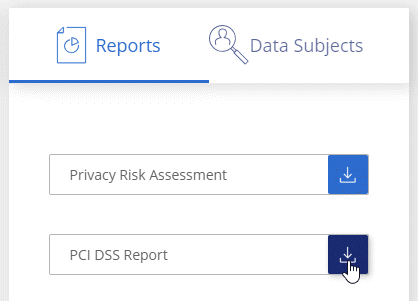
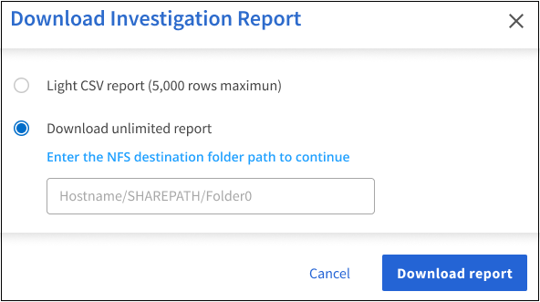

ドキュメントの変更をリクエスト
ドキュメントの変更をリクエスト GitHub で編集
GitHub で編集 寄稿者向けガイド
寄稿者向けガイドコンプライアンスレポートの表示
寄稿者
Cloud Data Sense は、組織のデータプライバシープログラムの状況をよりよく把握するために使用できるレポートを提供します。
デフォルトでは、Cloud Data Senseダッシュボードには、すべての作業環境、データベース、およびデータソースのコンプライアンスデータとガバナンスデータが表示されます。一部の作業環境のデータのみを含むレポートを表示する場合は、 それらの作業環境を選択します。

|
|
プライバシーリスク評価レポート
プライバシーリスクアセスメントレポートには、 GDPR や CCPA などのプライバシー規制に必要な、組織のプライバシーリスクステータスの概要が記載されています。このレポートには次の情報が含まれます。
- 準拠ステータス
-
A 重要度スコア 機密性、個人、機密性の高い個人のいずれであっても、データの配信は可能です。
- 評価の概要
-
検出された個人データの種類とデータのカテゴリの内訳。
- この評価のデータ主体
-
国 ID が見つかった場所別の人の数。
プライバシーリスク評価レポートの生成
[ データセンス ] タブに移動してレポートを生成します。
-
Cloud Managerの左側のナビゲーションメニューで、* Data sense *をクリックします。
-
[Compliance] をクリックし、 [*Reports] の下にある [*Privacy Risk Assessment] の横にあるダウンロードアイコンをクリックします。

Cloud Data Sense は、必要に応じて他のグループにレビューして送信できる PDF レポートを生成します。
重要度スコア
Cloud Data Sense は、プライバシーリスク評価レポートの重要度スコアを次の 3 つの変数に基づいて計算します。
-
すべてのデータの個人データの割合。
-
すべてのデータの機密性の高い個人データの割合。
-
データ主体を含むファイルの割合。国 ID 、社会保障番号、税務 ID 番号などの国 ID によって決定されます。
スコアの決定に使用されるロジックは次のとおりです。
| 重要度スコア | ロジック |
|---|---|
0 |
3 つの変数はすべて 0% です |
1. |
変数の 1 つが 0% を超えています |
2. |
変数の 1 つが 3% を超えています |
3. |
2 つの変数が 3% を超えています |
4. |
3 つの変数が 3% を超えています |
5. |
変数の 1 つが 6% を超えています |
6. |
2 つの変数が 6% を超えています |
7. |
3 つの変数が 6% を超えています |
8. |
変数の 1 つが 15% を超えています |
9. |
2 つの変数が 15% を超えています |
10. |
3 つの変数が 15% を超えています |
PCI DSS レポート
Payment Card Industry Data Security Standard （ PCI DSS ） Report は、クレジットカード情報のファイルへの配布を識別するのに役立ちます。このレポートには次の情報が含まれます。
- 概要
-
クレジットカード情報を含むファイル数と、作業環境。
- 暗号化
-
暗号化された作業環境または暗号化されていない作業環境にあるクレジットカード情報を含むファイルの割合。この情報は Cloud Volumes ONTAP に固有のものです。
- ランサムウェアからの保護
-
ランサムウェアからの保護が有効になっている、または有効になっていない作業環境でのクレジットカード情報を含むファイルの割合。この情報は Cloud Volumes ONTAP に固有のものです。
- 保持
-
ファイルが最後に変更された期間。これは、クレジットカード情報を処理するよりも長く保持する必要がないために役立ちます。
- クレジットカード情報の配布
-
クレジットカード情報が見つかった作業環境、および暗号化とランサムウェアによる保護が有効になっているかどうか。
PCI DSS レポートの生成
[ データセンス ] タブに移動してレポートを生成します。
-
Cloud Managerの左側のナビゲーションメニューで、* Data sense *をクリックします。
-
[* コンプライアンス * ] をクリックし、 [* レポート ] の下の [* PCI DSS レポート * ] の横にあるダウンロード・アイコンをクリックします。

Cloud Data Sense は、必要に応じて他のグループにレビューして送信できる PDF レポートを生成します。
HIPAA レポート
Health Insurance Portability and Accountability Act （ HIPAA ：医療保険の携行性と責任に関する法律）レポートは、健康に関する情報を含むファイルを特定するのに役立ちます。このポリシーは、 HIPAA データプライバシー法に準拠するという組織の要件を支援するように設計されています。Cloud Data Sense が探している情報には、次のものがあります。
-
ヘルス参照パターン
-
ICD-10-CM 医療コード
-
ICD-9-CM 医療コード
-
HR –健全性カテゴリ
-
ヘルスアプリケーションデータカテゴリ
このレポートには次の情報が含まれます。
- 概要
-
ヘルス情報が含まれているファイルの数と、作業環境。
- 暗号化
-
暗号化された作業環境または暗号化されていない作業環境にあるヘルス情報を含むファイルの割合。この情報は Cloud Volumes ONTAP に固有のものです。
- ランサムウェアからの保護
-
ランサムウェアからの保護が有効になっている、または有効になっていない作業環境でのヘルス情報を含むファイルの割合。この情報は Cloud Volumes ONTAP に固有のものです。
- 保持
-
ファイルが最後に変更された期間。健常性の情報は、処理するまでに時間がかかることがないため、この方法が便利です。
- 健康情報の配布
-
健常性の情報が見つかった作業環境、および暗号化とランサムウェアによる保護が有効になっているかどうか。
HIPAA レポートの生成
[ データセンス ] タブに移動してレポートを生成します。
-
Cloud Managerの左側のナビゲーションメニューで、* Data sense *をクリックします。
-
[Compliance] をクリックし、 [*Reports] の下にある [HIPAA Report] の横にあるダウンロードアイコンをクリックします。
Cloud Data Sense は、必要に応じて他のグループにレビューして送信できる PDF レポートを生成します。
データマッピングレポート
データマッピングレポートには、企業データソースに保存されているデータの概要が表示され、移行、バックアップ、セキュリティ、コンプライアンスの各プロセスの決定に役立ちます。最初に、すべての作業環境とデータソースをまとめた概要レポートが表示され、それぞれの作業環境の内訳が表示されます。
このレポートには次の情報が含まれます。
- 使用容量
-
すべての作業環境：各作業環境のファイル数と使用済み容量が表示されます。単一の作業環境の場合：容量が最も多いファイルが表示されます。
- データの経過時間
-
ファイルが作成されたとき、最終変更されたとき、または最後にアクセスされたときのグラフとグラフが 3 つ表示されます。特定の日付範囲に基づいて、ファイル数とその使用済み容量が表示されます。
- データのサイズ
-
作業環境の特定のサイズ範囲内に存在するファイルの数を示します。
- ファイルの種類
-
作業環境に保存されているファイルタイプごとのファイルの総数と使用容量が表示されます。
データマッピングレポートの生成
[ データセンス ] タブに移動してレポートを生成します。
-
Cloud Managerの左側のナビゲーションメニューで、* Data sense *をクリックします。
-
[* Governance （ガバナンス） ] をクリックし、 [Governance Dashboard] から [* Full Data Mapping Overview Report] ボタンをクリックします。

Cloud Data Sense は、必要に応じて他のグループにレビューして送信できる PDF レポートを生成します。
データ調査レポート
Data Investigation Reportは、Data Investigationページの内容をダウンロードしたものです。 "Data Investigationページの詳細については、こちらをご覧ください"。
レポートは、.csvファイル（最大5、000行のデータを含めることができます）、またはNFS共有にエクスポートする.jsonファイル（無制限の行数を含めることができます）としてローカルマシンに保存できます。ファイル（非構造化データ）、ディレクトリ（フォルダおよびファイル共有）、またはデータベース（構造化データ）をスキャンする場合、レポートファイルは最大3つダウンロードされます。
ファイル共有にエクスポートするときは、データセンスにエクスポートアクセスのための正しい権限があることを確認してください。
データ調査レポートの生成
-
[データ調査]ページで、をクリックします
 ボタン"] ボタンをクリックします。
ボタン"] ボタンをクリックします。 -
データの.csvレポートと.jsonレポートのどちらをダウンロードするかを選択し、*レポートのダウンロード*をクリックします。

JSONレポートを選択するときは、レポートをダウンロードするNFS共有の名前を「<host_name>：/<share_path>`」の形式で入力します。
レポートをダウンロード中であることを示すメッセージがダイアログに表示されます。
JSONレポートの生成の進捗状況は、で確認できます [ アクションステータス（ Actions Status ） ] パネル。
各データ調査レポートに含まれる情報
非構造化ファイルデータレポート*には、ファイルに関する次の情報が含まれています。
-
ファイル名
-
場所のタイプ
-
作業環境の名前
-
ストレージリポジトリ（ボリューム、バケット、共有など）
-
作業環境のタイプ
-
ファイルパス
-
ファイルタイプ
-
ファイルサイズ
-
時刻を作成しました
-
最終更新日
-
最後にアクセスした
-
ファイルの所有者
-
カテゴリ
-
個人情報
-
機密性の高い個人情報
-
削除の検出日
削除の検出日は、ファイルが削除または移動された日付を示します。これにより、機密ファイルがいつ移動されたかを識別できます。削除されたファイルは、ダッシュボードまたは [ 調査 ] ページに表示されるファイル番号カウントの一部ではありません。ファイルは CSV レポートにのみ表示されます。
非構造化ディレクトリデータレポート*には、フォルダおよびファイル共有に関する次の情報が含まれています。
-
作業環境の名前
-
ストレージリポジトリ（フォルダ、ファイル共有など）
-
作業環境のタイプ
-
ファイルパス（ディレクトリ名）
-
ファイルの所有者
-
時刻を作成しました
-
検出時刻
-
最終更新日
-
最後にアクセスした
-
オープンアクセス権
-
ディレクトリタイプ
構造化データレポート*には、データベーステーブルに関する次の情報が含まれています。
-
DB テーブル名
-
場所のタイプ
-
作業環境の名前
-
ストレージリポジトリ（スキーマなど）
-
列数
-
行数
-
個人情報
-
機密性の高い個人情報
レポートの作業環境を選択する
Cloud Data Sense Compliance ダッシュボードの内容をフィルタリングして、すべての作業環境とデータベース、または特定の作業環境のコンプライアンスデータを表示できます。
ダッシュボードをフィルタすると、 Data Sense によって、選択した作業環境だけにコンプライアンスデータとレポートがスコープされます。
-
フィルタドロップダウンをクリックし、データを表示する作業環境を選択して、 * 表示 * をクリックします。